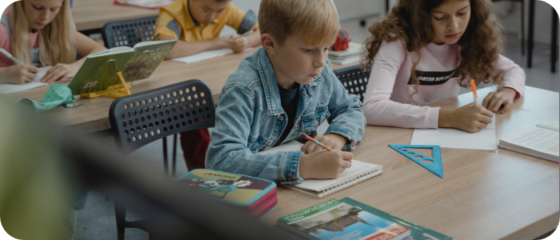

Leer coderen met KEYART
Met de groeiende digitalisering in de huidige maatschappij komen we dagelijks in aanraking met code. Hoewel we ons misschien niet direct bewust zijn van de invloed die code heeft op ons leven, is het wel interessant om hier meer over te leren. KEYART biedt lesmateriaal aan voor kinderen tussen de 8 en de 15 jaar om spelenderwijs meer te leren over code.
Elke dag code
Zonder dat we het doorhebben komen wij dagelijks heel veel in aanraking met code. Waar velen bij code snel denken aan computers of telefoons, is deze wereld nog veel groter. Wil jij nog meer weten over waar code te vinden is in het dagelijks leven? En hoe belangrijk het bewustzijn hierover is? Kijk dan vooral eens naar onderstaande reportage over code in het dagelijkss leven.

Workshop ‘Kunst met Code’
Tijdens de workshop ‘Kunst met Code’ leren de leerlingen binnen drie lessen hoe ze door gebruik te maken van de mogelijkheden van het codeerprogramma P5 digitale vormen kunnen creëren die ze kunnen samenvoegen tot een kunstwerk.
Les 1: Vormen en kleuren
In deze les ga je voor het eerst aan de slag met het programma P5. In de eerste les gaan we leren hoe je met code vierkanten, cirkels en lijnen kunt tekenen.
Les 2: Composities
Nu je in les 1 hebt geleerd hoe je vierkanten, cirkels en lijnen kunt maken, gaan we in deze les leren hoe je deze vormen kunt samenvoegen tot een mooie compositie. Aan het einde van de les kun je bijvoorbeeld een gebouw maken!
Les 3: Maak je eigen kunstwerk!
Na les 1 en 2 weet je genoeg over de basisprincipes van P5 en het coderen dat je jouw eigen kunstwerk kunt gaan creëren. Aan de hand van het thema van jouw school kun je zo een mooie digitale compositie samenstellen.
Galerij
Na het volgen van verschillende van de door KEYART aangeboden workshops zijn er een heleboel mooie kunstwerken ontstaan. Wil je graag zien wat de leerlingen hebben gemaakt? Of wil je inspiratie op doen voor jouw eigen workshop? Neem dan vooral eens een kijkje in de galerij.